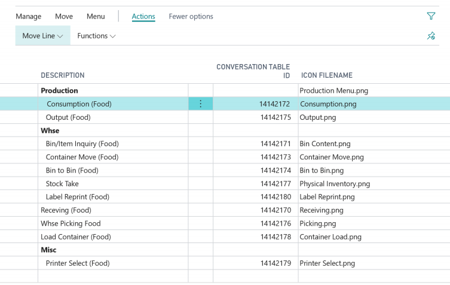

Home
/
Learn
/
ADC Framework
ADC Menu Setup
7 minutes - Unit 3 of 4
From within ADC Setup click on the
Menu
action to open the menu configuration. This configuration will determine the menu that is seen within the ADC Modern Client

The published Conversation Table ID can be typed or selected using the lookup. This will default in a description however it can be overtyped/renamed as required
Sub menus can be created by typing a description into a new line and leaving the Conversation Table ID blank, use the Move Line actions to indent and move rows into and around within them
The Icon Filename is used to specify the image that is displayed along with the menu. This is not required and should refer to an actual filena me placed within the Images folder of the ADC website
Next unit: ADC Transaction Setup
< Back
Continue >
×